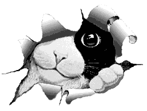

Esto es una capa con posicionamiento estático
posicionamiento static, predeterminado.
CSS
Posicionamiento static, aunque en este caso no se
indicó el atributo position static, pues no hace falta.
Esta capa tiene posicionamiento absoluto.
Me permite especificar top y left para colocarla con respecto a la esquina superior izquierda.
Posicionamiento absoluto con z-index menor (la capa aparece por debajo de otras que se superponen con z-index
mayor.
Posicionamiento absoluto con atributos bottom y right
Posicionamiento CSS
Hola
Hola esto es una prueba
Capa de posicionamiento relative
Se tiene en cuenta esta capa para posicionar las siguientes.
hola de nuevo!
Esta capa tiene posicionamiento fixed.
Me permite especificar top y left para colocarla con respecto a la esquina superior izquierda.
Hola

¡¡Pongo texto para que se vea!!
Esto hace desplazamiento, con tanto br
...